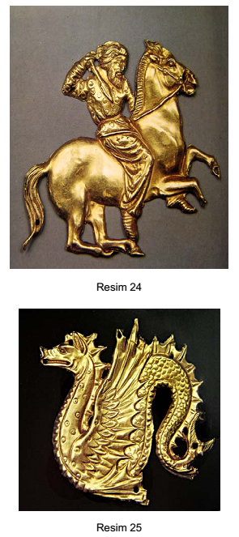

Levha 12

Resim 24. Dört nala giden at üzerindeki İskit'in yandan görünüşü, altın, Kul Oba (B. Piotrovski, aynı eser, resim 202).
Resim 25. Hipokampus'un yandan görünüşü, altın, Kul Oba (B. Piotrovski, aynı eser, resim 207).[193]